Capítulo 4 Temas sociales
4.1 Conflicto y cohesión territorial
Figura 4.1: ¿Con qué frecuencia usted/alguien de su hogar se ha molestado o incomodado por problemas con sus vecinos? según ola de estudio
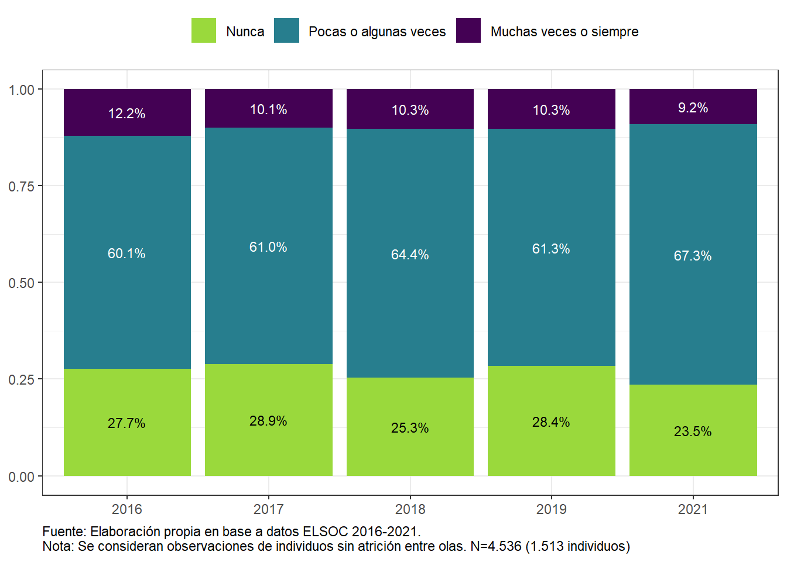Figura 4.2: Cambios en frecuencia de conflictos barriales

Figura 4.3: Porcentaje con alta frecuencia de conflictos barriales, según ola del estudio y zona geográfica. Porcentaje con conflictos barriales “Siempre” o “Muchas veces”

Figura 4.4: Porcentaje con alta frecuencia de conflictos barriales, según ola del estudio y zona de residencia. Porcentaje con conflictos barriales “Siempre” o “Muchas veces.”

Figura 4.5: Porcentaje con alta frecuencia de conflictos barriales, según ola del estudio y quintil de ingreso. Porcentaje con conflictos barriales “Siempre” o “Muchas veces.”

4.1.1 Cartografía del conflicto barrial
Figura 4.6: Frecuencia promedio de problemas con vecinos, según comuna de residencia en la región metropolitana (2021).

Figura 4.7: Frecuencia promedio de problemas con vecinos, según región de Chile (2021)

4.2 Confianza en vecinos
Figura 4.8: En términos generales, ¿cuánto confía usted en sus vecinos? según ola de estudio.

Figura 4.9: En términos generales, ¿cuánto confía usted en sus vecinos? Según ola del estudio y zona geográfica. Suma de Respuestas “Bastante” y “Mucho.”

Figura 4.10: En términos generales, ¿cuánto confía usted en sus vecinos? Según ola del estudio y quintil de ingreso. Suma de Respuestas “Bastante” y “Mucho.”
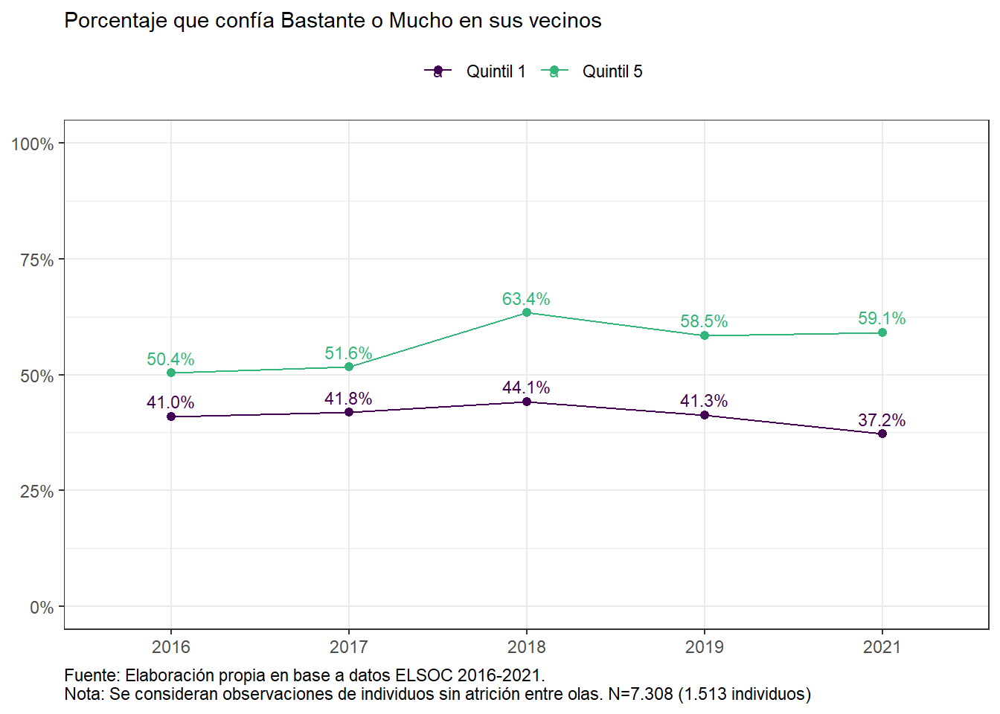4.2.1 Seguridad barrial
Figura 4.11: ¿Qué tan seguro o inseguro se siente en el barrio o vecindario donde usted vive? Según ola del estudio.

Figura 4.12: ¿Qué tan seguro o inseguro se siente en el barrio o vecindario donde usted vive? Según ola del estudio y zona geográfica. Suma de Respuestas “Inseguro” o ”Muy Inseguro".
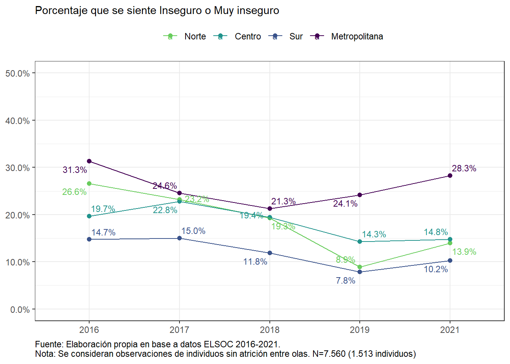Figura 4.13: ¿Qué tan seguro o inseguro se siente en el barrio o vecindario donde usted vive? Según ola del estudio y nivel educacional. Suma de Respuestas “Inseguro” o ”Muy Inseguro".

Figura 4.14: ¿Qué tan seguro o inseguro se siente en el barrio o vecindario donde usted vive? Según ola del estudio y tramos de edad. Suma de Respuestas “Inseguro” o ”Muy Inseguro".

Figura 4.15: ¿Qué tan seguro o inseguro se siente en el barrio o vecindario donde usted vive? Según ola del estudio y quintil de ingreso per capita. Suma de Respuestas “Seguro” o ”Muy Seguro".

4.2.2 Criminalidad barrial
Figura 4.16: ¿Con qué frecuencia se han producido crímenes (riñas, robos y tráfico de drogas) en su barrio?, según ola de estudio.

Figura 4.17: ¿Con qué frecuencia se han producido crímenes (riñas, robos y tráfico de drogas) en su barrio?, según ola del estudio y zona geográfica. Porcentaje de experiencias de criminalidad “Siempre” o “Muchas veces.”
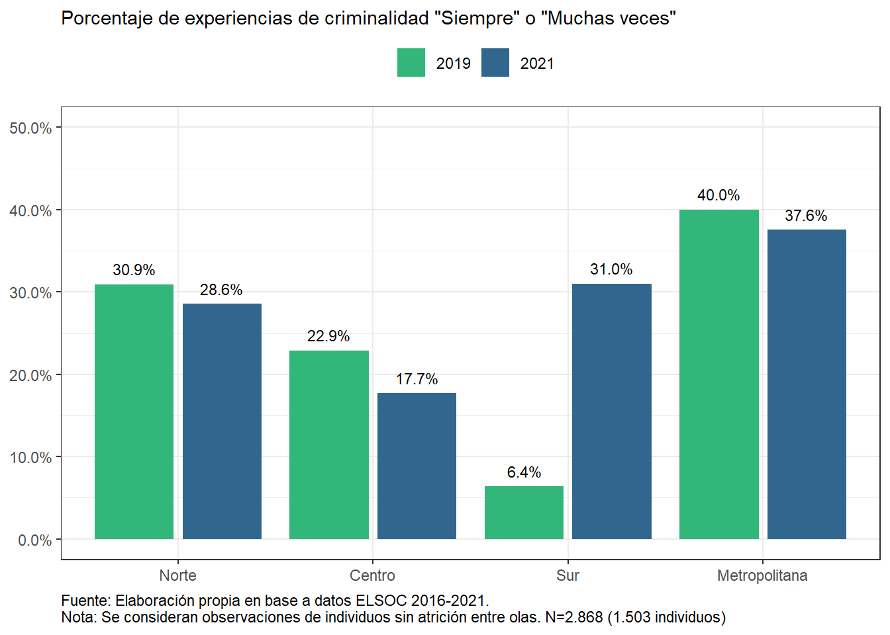Figura 4.18: ¿Con qué frecuencia se han producido crímenes (riñas, robos y tráfico de drogas) en su barrio?, según ola del estudio y tipo de ciudad. Porcentaje de experiencias de criminalidad “Siempre” o “Muchas veces.”

Figura 4.19: ¿Con qué frecuencia se han producido crímenes (riñas, robos y tráfico de drogas) en su barrio?, según ola del estudio y quintil de ingreso. Porcentaje de experiencias de criminalidad “Siempre” o “Muchas veces.”
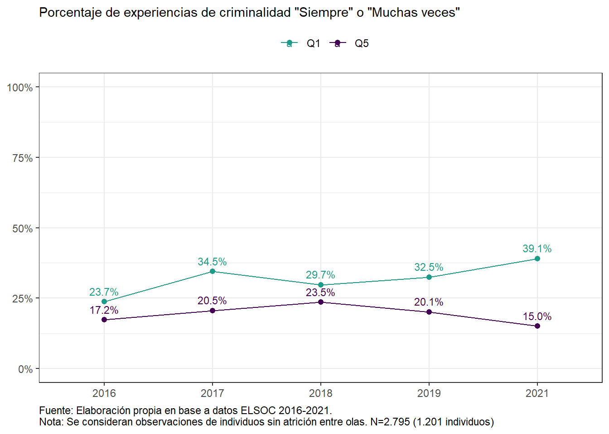4.2.3 Cartografía de la criminalidad barrial
Figura 4.20: Frecuencia promedio de percepción de crímenes (riñas, robos y tráfico de drogas) en el barrio, según comuna de residencia en la región metropolitana (2021).

Figura 4.21: Frecuencia promedio de percepción de crímenes (riñas, robos y tráfico de drogas) en el barrio, según región de Chile (2021)

4.3 Migración
4.3.1 Amenaza realista y amenaza simbólica respecto a inmigrantes
Figura 4.22: Con la llegada de migrantes a Chile, está aumentando el desempleo“, según ola y origen de migrantes. Porcentaje de personas que responden”De acuerdo" o Totalmente de acuerdo".

Figura 4.23: Con la llegada de migrantes a Chile, está aumentando el desempleo“, según ola, zona y origen de migrantes. Porcentaje de personas que responden”De acuerdo" o Totalmente de acuerdo".
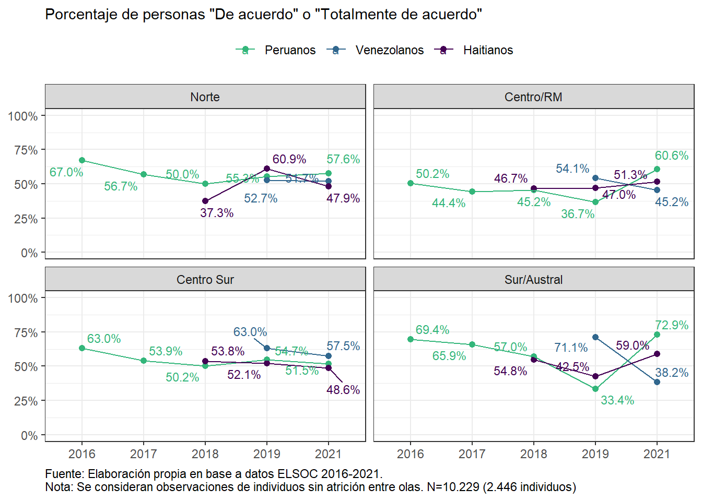Figura 4.24: “Con la llegada de migrantes, Chile está perdiendo su identidad,” según ola y origen de migrantes. Porcentaje de personas que responden “De acuerdo” o “Totalmente de acuerdo.”

Figura 4.25: “Con la llegada de migrantes, Chile está perdiendo su identidad,” según ola, zona y origen de migrantes. Porcentaje de personas que responden “De acuerdo” o “Totalmente de acuerdo.”

Figura 4.26: Confianza en migrantes, según ola y origen de migrantes. Porcentaje de personas que responden “Bastante” o “Mucha confianza”

Figura 4.27: Confianza en migrantes, según ola, zona y origen de migrantes. Porcentaje de personas que responden “Bastante” o “Mucha confianza”

Figura 4.28: Percepción de amenaza realista y simbólica, según grupo de migrantes (2021). Porcentaje de personas que responden “De acuerdo” o Totalmente de acuerdo".

4.3.2 Amenaza realista y simbólica respecto a inmigrantes según nivel educacional
Figura 4.29: Percepción de amenaza realista y simbólica respecto a inmigrantes, según nivel educacional (2021). Porcentaje de personas que responden “De acuerdo” o Totalmente de acuerdo".

Figura 4.30: Percepción de amenaza realista y simbólica, según tramo de edad (2021). Porcentaje de personas que responden “De acuerdo” o Totalmente de acuerdo".
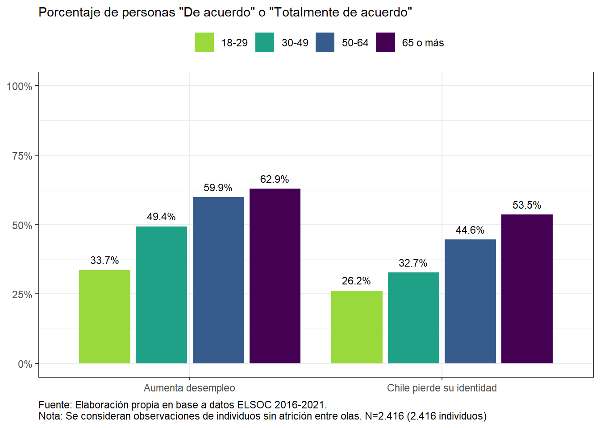4.4 Género
4.4.1 Sexismo hostil y benevolente
Figura 4.31: Sexismo benévolo y hostil, según sexo (2021). Porcentaje que responde “De acuerdo” o “Totalmente de acuerdo.”
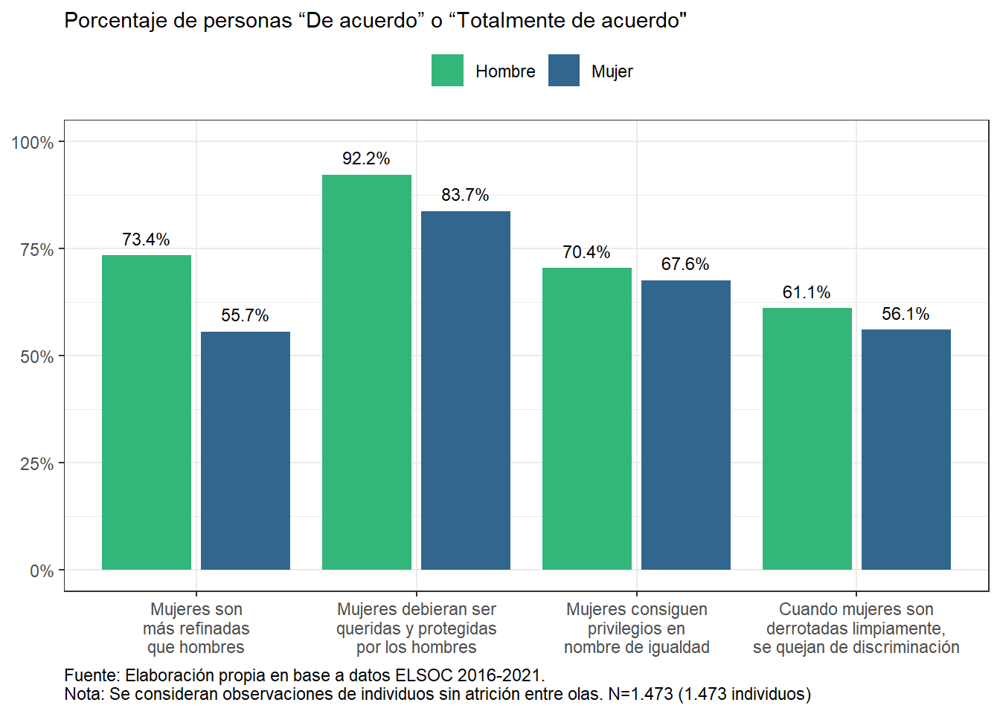Figura 4.32: Sexismo benévolo y hostil, según nivel educacional (2021). Porcentaje que responde “De acuerdo” o “Totalmente de acuerdo.”

4.4.2 Trabajo y género
Figura 4.33: Porcentaje de trabajadores y trabajadoras por situación ocupacional (2021), según sexo del entrevistado

4.5 Estatus subjetivo y Percepción de Mérito
4.5.1 Estatus subjetivo
Figura 4.34: En nuestra sociedad, hay grupos que tienden a ubicarse en los niveles más altos y grupos que tienden a ubicarse en los niveles más bajos de la sociedad ¿Dónde se ubicaría usted?, según ola de estudio.

Figura 4.35: Cambios de Clase social subjetiva entre 2016, 2019 y 2021
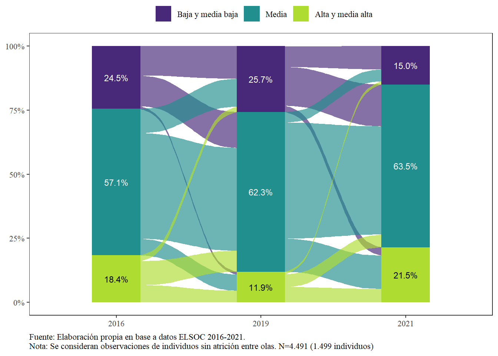Figura 4.36: Clase social subjetiva, según quintiles de ingreso (2021)

Figura 4.37: Si usted tiene actualmente hijos o si los tuviera en el futuro, ¿dónde cree usted que se ubicarían ellos?, según Clase social subjetiva (2021)

4.5.2 Movilidad social
Figura 4.38: Perspectiva de movilidad social, según ola. Nota: la perspectiva de movilidad social corresponde a la resta entre el estatus social esperado del hijo y el estatus social actual del encuestado.

Figura 4.39: Estatus subjetivo y tipo de movilidad social, nivel promedio según ola. Nota: perspectiva de movilidad social corresponde a la resta entre el estatus social esperado del hijo y el estatus social actual del encuestado. En cambio movilidad social relativa corresponde a la resta entre el estatus social actual y el estatus social de la familia donde creció.

4.5.3 Percepción de meritocracia
Figura 4.40: Percepción de importancia y recompensas del mérito, según ola de estudio. Porcentaje de Respuestas “De acuerdo” y ”Totalmente de acuerdo".

##Propuestas Bárbara.
Figura 4.41: Evolución de confianza en los vecinos según sexo

Figura 4.42: Evolución de confianza en los vecinos según zona

Figura 4.43: Evolución de confianza en los vecinos según quintil de ingresos

Figura 4.44: Evolución de confianza en los vecinos según quintil de pueblos originarios

Figura 4.45: Evolución de confianza en los vecinos según quintil de inmigrantes
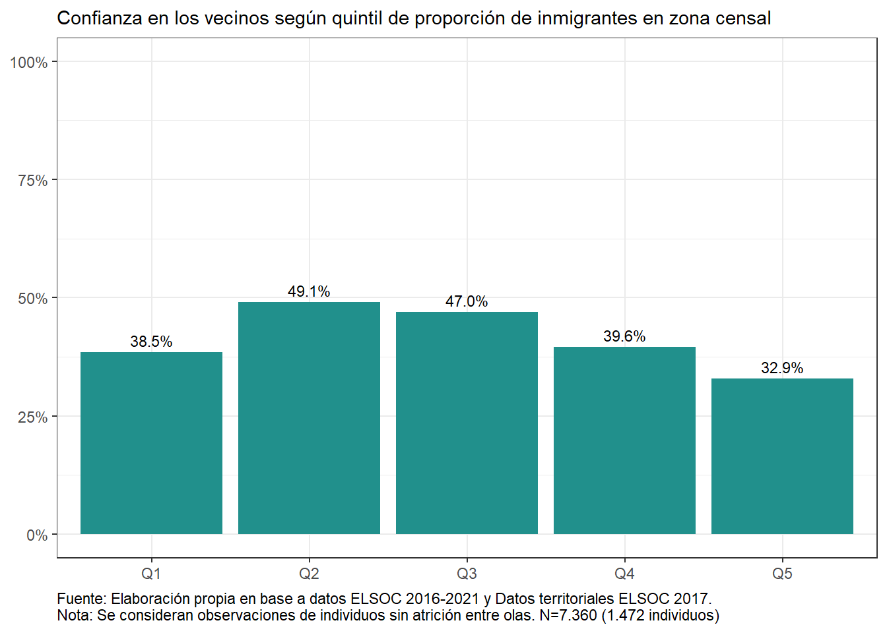Figura 4.46: Evolución de confianza en los vecinos según quintil de inmigrantes latinos

Figura 4.47: Evolución de confianza en los vecinos según quintil de inmigrantes norteamericanos y europeos

Figura 4.48: Evolución de confianza en los vecinos según quintil de escolaridad
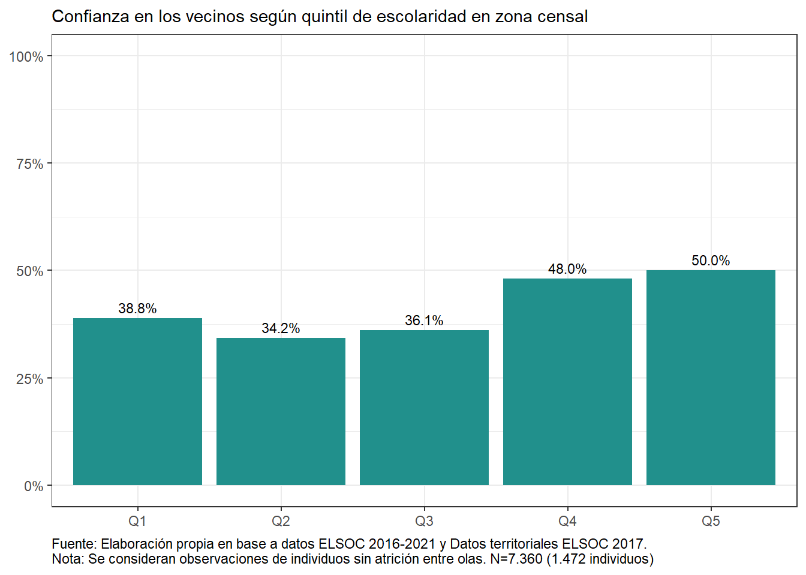Figura 4.49: Evolución de confianza en los vecinos según quintil de escolaridad del jefe de hogar

Figura 4.50: Evolución de confianza en los vecinos según quintil de varianza de escolaridad del jefe de hogar